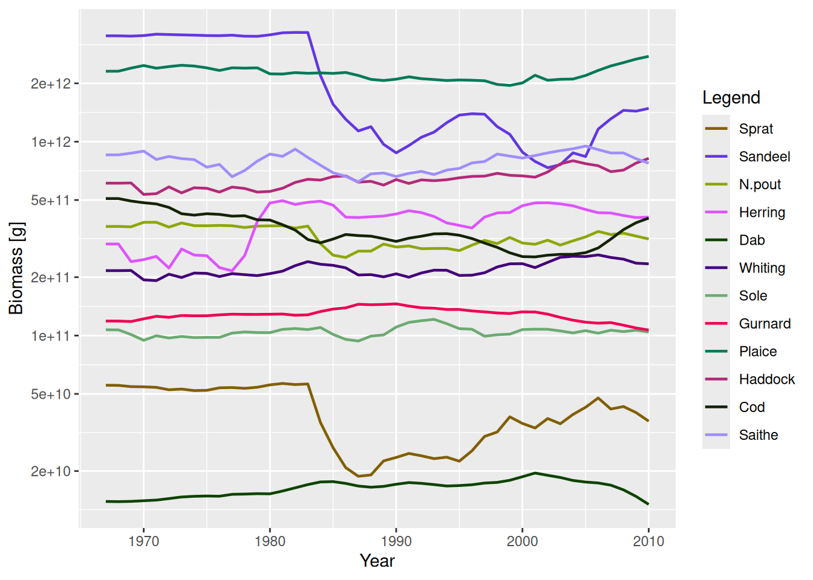
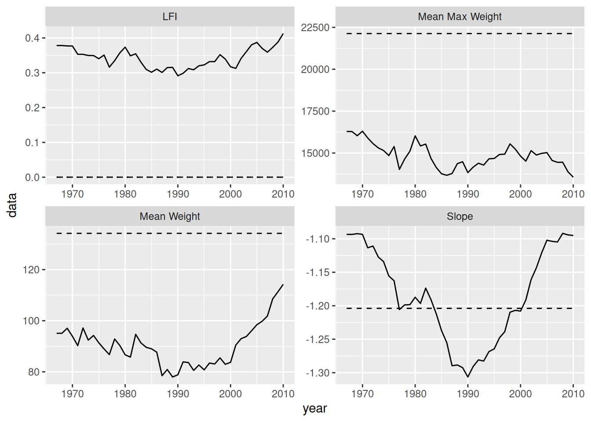
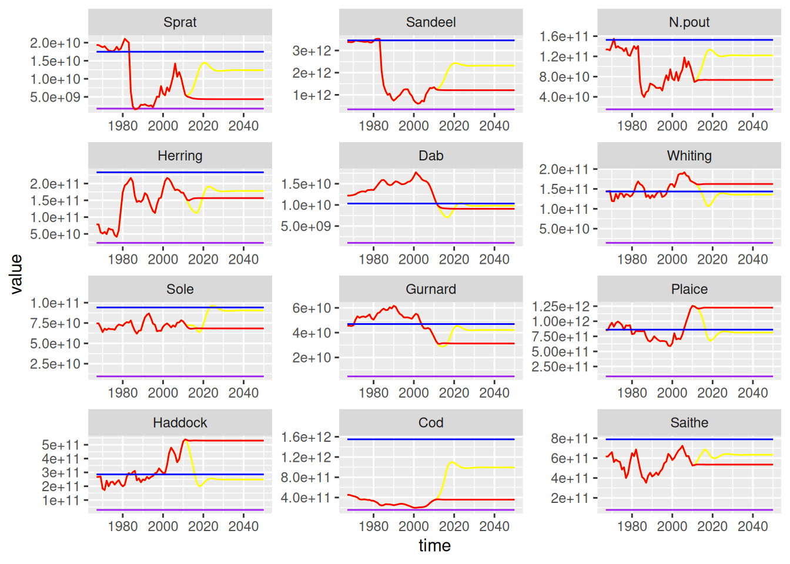

NS_species_paramsA simulation of the North Sea
In this section we try to pull everything together with an extended example of a multispecies model for the North Sea. First we will set up the model, project it through time using historical levels of fishing effort, and then examine the results. We then run two different future projection scenarios.
Setting up the North Sea model
The first job is to set up the MizerParams object for the North Sea model. In the previous multispecies examples we have already been using the life-history parameters and the interaction matrix for the North Sea model. We will use them again here but will make some changes. In particular we set up the fishing gears differently.
Species parameters
The species in the model are: Sprat, Sandeel, N.pout, Herring, Dab, Whiting, Sole, Gurnard, Plaice, Haddock, Cod, Saithe, which account for about 90% of the total biomass of all species sampled by research trawl surveys in the North Sea. The NS_species_params object that comes as an example with the mizer package is a data.frame with columns for species, w_max, w_mat, beta, sigma, k_vb, R_max and w_inf.
We have seen before that only having these columns in the species data.frame is sufficient to make a MizerParams object. Any missing columns will be filled with default values by the MizerParams constructor. For example, the data.frame does not include columns for h or gamma. This means that they will be estimated using the k_vb column.
We will use the default density dependence in the reproduction rate, which is the Beverton-Holt shape. This requires a column R_max in the species data.frame which contains the maximum reproduction rate for each species. This column is already in the NS_species_params data.frame. The values were found through a calibration process which is not covered here.
Gear parameters
At the moment we are not providing any information on the selectivity of the gears for the species. By default, the selectivity function is a knife-edge which only takes a single argument, knife_edge_size. In this model we want the selectivity pattern to be a sigmoid shape which more accurately reflects the selectivity pattern of trawlers in the North Sea. The sigmoid selectivity function is expressed in terms of length rather than weight and uses the parameters l25 and l50, which are the lengths at which 25% and 50% of the stock is selected. The length based sigmoid selectivity looks like:
\begin{equation} % {#eq:trawl_sel} S_l = \frac{1}{1 + \exp(S1 - S2\ l)} \end{equation}
where l is the length of an individual, S_l is the selectivity at length, S2 = \log(3) / (l50 - l25) and S1 = l50 \cdot S2.
This selectivity function is included in mizer as sigmoid_length(). You can see the help page for more details. As the mizer model is weight based, and this selectivity function is length based, it uses the length-weight parameters a and b to convert between length and weight using the standard relation w = a
l^b. These species parameters need to be added as columns to the NS_species_params data frame.
sigmoid_length() has the arguments l25 and l50. As explained in the section on fishing gears and selectivity, the arguments of the selectivity function need to be in the gear parameter data frame. We also need a column specifying the name of the selectivity function we wish to use. Note it would probably be easier to put this data into a *.csv file and then read it in rather than type it in by hand like we do here:
gear_params <-
data.frame(species = NS_species_params$species,
gear = NS_species_params$species,
sel_func = "sigmoid_length",
l25 = c(7.6, 9.8, 8.7, 10.1, 11.5, 19.8, 16.4, 19.8, 11.5,
19.1, 13.2, 35.3),
l50 = c(8.1, 11.8, 12.2, 20.8, 17.0, 29.0, 25.8, 29.0, 17.0,
24.3, 22.9, 43.6))
gear_paramsNote that we have set up a gear column so that each species will be caught by a separate gear named after the species.
In this model we are interested in projecting forward using historical fishing mortalities. The historical fishing mortality from 1967 to 2010 for each species is stored in the csv file NS_f_history.csv included in the package. As before, we can use read.csv() to read in the data. This reads the data in as a data.frame. We want this to be a matrix so we use the as() function:
f_location <- system.file("extdata", "NS_f_history.csv", package = "mizer")
f_history <- as(read.csv(f_location, row.names = 1), "matrix")We can take a look at the first years of the data:
head(f_history) Sprat Sandeel N.pout Herring Dab Whiting Sole Gurnard
1967 0 0 0 1.0360279 0.09417655 0.8294528 0.6502019 0
1968 0 0 0 1.7344576 0.07376065 0.8008995 0.7831250 0
1969 0 0 0 1.4345001 0.07573638 1.3168280 0.8744095 0
1970 0 0 0 1.4342405 0.10537236 1.3473505 0.6389915 0
1971 0 0 0 1.8234973 0.08385884 0.9741884 0.8167561 0
1972 0 0 0 0.9033768 0.09044461 1.3148588 0.7382834 0
Plaice Haddock Cod Saithe
1967 0.4708827 0.7428694 0.6677456 0.4725102
1968 0.3688033 0.7084553 0.6994389 0.4270201
1969 0.3786819 1.3302821 0.6917888 0.3844648
1970 0.5268618 1.3670695 0.7070891 0.5987086
1971 0.4192942 0.9173131 0.7737543 0.4827822
1972 0.4522231 1.3279087 0.8393267 0.5796321Fishing mortality is calculated as the product of selectivity, catchability and fishing effort. The values in f_history are absolute levels of fishing mortality. We have seen that the fishing mortality in the mizer simulations is driven by the fishing effort argument passed to the project() function. Therefore if we want to project forward with historical fishing levels, we need to provide project() with effort values that will result in these historical fishing mortality levels.
One of the model parameters that we have not really considered so far is catchability. Catchability is a scalar parameter used to modify the fishing mortality at size given the selectivity at size and effort of the fishing gear. By default catchability has a value of 1, meaning that an effort of 1 results in a fishing mortality of 1 for a fully selected species. When considering the historical fishing mortality, one option is therefore to leave catchability at 1 for each species and then use the f_history matrix as the fishing effort. However, an alternative method is to use the effort relative to a chosen reference year. This can make the effort levels used in the model more meaningful. Here we use the year 1990 as the reference year. If we set the catchability of each species to be the same as the fishing mortality in 1990 then an effort of 1 in 1990 will result in the fishing mortality being what it was in 1990. The effort in the other years will be relative to the effort in 1990.
gear_params$catchability <- as.numeric(f_history["1990", ])Other parameters
Considering the other model parameters, we will use default values for all of the other parameters apart from kappa, the carrying capacity of the resource spectrum (see see the section on resource density). This was estimated along with the values R_max as part of the calibration process.
We will use the interaction matrix inter that is shipped as an example with the mizer package, see also (https://sizespectrum.org/mizer/articles/multispecies_model.html#setting-the-interaction-matrix).
We now have all the information we need to create the MizerParams object:
params <- newMultispeciesParams(NS_species_params,
interaction = inter,
kappa = 9.27e10,
gear_params = gear_params)Because you have n != p, the default value for `h` is not very good.
Because the age at maturity is not known, I need to fall back to using
von Bertalanffy parameters, where available, and this is not reliable.
No ks column so calculating from critical feeding level.
Using z0 = z0pre * w_inf ^ z0exp for missing z0 values.
Using f0, h, lambda, kappa and the predation kernel to calculate gamma.Setting up and running the simulation
As we set our catchability to be the level of fishing mortality in 1990, before we can run the projection we need to rescale the effort matrix to get a matrix of efforts relative to 1990. To do this we want to rescale the f_history object to 1990 so that the relative fishing effort in 1990 = 1. This is done using R function sweep(). We then check a few rows of the effort matrix to check this has happened:
relative_effort <- sweep(f_history, 2, f_history["1990", ], "/")
relative_effort[as.character(1988:1992), ] Sprat Sandeel N.pout Herring Dab Whiting Sole
1988 0.8953804 1.2633229 0.8953804 1.214900 1.176678 0.9972560 1.2786517
1989 1.1046196 1.2931034 1.1046196 1.232790 1.074205 0.8797926 0.9910112
1990 1.0000000 1.0000000 1.0000000 1.000000 1.000000 1.0000000 1.0000000
1991 1.1902174 0.8814002 1.1902174 1.108016 1.143110 0.8096927 1.0044944
1992 1.2500000 0.8500522 1.2500000 1.316576 1.113074 0.7718676 0.9505618
Gurnard Plaice Haddock Cod Saithe
1988 0.0000000 1.176678 0.9946140 1.045964 1.0330579
1989 0.0000000 1.074205 0.8545781 1.060538 1.1223140
1990 1.0000000 1.000000 1.0000000 1.000000 1.0000000
1991 0.8096927 1.143110 0.7971275 1.001121 0.9619835
1992 0.7718676 1.113074 0.8797127 0.970852 1.0528926We could just project forward with these relative efforts. However, the population dynamics in the early years will be strongly determined by the initial population abundances (known as the transient behaviour - essentially the initial behaviour before the long term dynamics are reached). As this is ecology, we don’t know what the initial abundance are. One way around this is to project forward at a constant fishing mortality equal to the mortality in the first historical year until equilibrium is reached. We then use this steady state as the initial state for the simulation. This approach reduces the impact of transient dynamics.
params <- projectToSteady(params, effort = relative_effort["1967", ])Convergence was achieved in 24 years.We now have our parameter object and out matrix of efforts relative to 1990. We use this effort matrix as the effort argument to the project() function. We use dt = 0.25 (the simulation will run faster than with the default value of 0.1, but tests show that the results are still stable) and save the results every year.
sim <- project(params, effort = relative_effort, dt = 0.25, t_save = 1)Plotting the results, we can see how the biomasses of the stocks change over time.
plotBiomass(sim)
To explore the state of the community it is useful to calculate indicators of the unexploited community. Therefore we also project forward to the steady state with 0 fishing effort.
sim0 <- projectToSteady(params, effort = 0, return_sim = TRUE)Convergence was achieved in 42 years.Exploring the model outputs
Here we look at some of the ways the results of the simulation can be explored. We calculate the community indicators mean maximum weight, mean individual weight, community slope and the large fish indicator (LFI) over the simulation period, and compare them to the unexploited values. We also compare the simulated values of the LFI to a community target based on achieving a high proportion of the unexploited value of the LFI of 0.8 LFI_{F=0}.
The indicators are calculated using the functions described in the section about indicator functions. Here we calculate the LFI and the other community indicators for the unexploited community. When calculating these indicators we only include demersal species and individuals in the size range 10 g to 100 kg, and the LFI is based on species larger than 40 cm. Because we are interested only in the equilibrium unexploited values, we apply the indicator functions to finalParams(sim0), the MizerParams object holding the state at the final time step of the simulation. Applied to a MizerParams object rather than a MizerSim, these functions return the single value for that state rather than a whole time series.
demersal_species <- c("Dab", "Whiting", "Sole", "Gurnard", "Plaice",
"Haddock", "Cod", "Saithe")
params0 <- finalParams(sim0)
lfi0 <- getProportionOfLargeFish(params0, species = demersal_species,
min_w = 10, max_w = 100e3,
threshold_l = 40)
mw0 <- getMeanWeight(params0, species = demersal_species,
min_w = 10, max_w = 100e3)
mmw0 <- getMeanMaxWeight(params0, species = demersal_species,
min_w = 10, max_w = 100e3)[["mmw_biomass"]]
slope0 <- getCommunitySlope(params0, species = demersal_species,
min_w = 10, max_w = 100e3)[["slope"]]We also calculate the time series of these indicators for the exploited community:
lfi <- getProportionOfLargeFish(sim, species = demersal_species,
min_w = 10, max_w = 100e3,
threshold_l = 40)
mw <- getMeanWeight(sim, species = demersal_species,
min_w = 10, max_w = 100e3)
mmw <- getMeanMaxWeight(sim, species = demersal_species, min_w = 10,
max_w = 100e3)[, "mmw_biomass"]
slope <- getCommunitySlope(sim, species = demersal_species, min_w = 10,
max_w = 100e3)[, "slope"]We can plot the exploited and unexploited indicators, along LFI reference level. Here we do it using ggplot2 which uses data.frames. We make three data.frames (one for the time series, one for the unexploited levels and one for the reference level): Each data.frame is a data.frame of each of the measures, stacked on top of each other.
library(ggplot2)
years <- 1967:2010
# Simulated data
community_plot_data <- rbind(
data.frame(year = years, measure = "LFI", data = lfi),
data.frame(year = years, measure = "Mean Weight", data = mw),
data.frame(year = years, measure = "Mean Max Weight", data = mmw),
data.frame(year = years, measure = "Slope", data = slope))
# Unexploited data
community_unfished_data <- rbind(
data.frame(year = years, measure = "LFI", data = lfi0),
data.frame(year = years, measure = "Mean Weight", data = mw0),
data.frame(year = years, measure = "Mean Max Weight", data = mmw0),
data.frame(year = years, measure = "Slope", data = slope0))
# Reference level
community_reference_level <-
data.frame(year = years, measure = "LFI", data = lfi0 * 0.8)
# Build up the plot
ggplot(community_plot_data) +
geom_line(aes(x = year, y = data)) +
facet_wrap(~measure, scales = "free") +
geom_line(aes(x = year, y = data), linetype = "dashed",
data = community_unfished_data) +
geom_line(aes(x = year, y = data), linetype = "dotted",
data = community_reference_level)
According to our simulations, historically the LFI in the North Sea has been below the reference level.
Future projections
As well as investigating the historical simulations, we can run projections into the future. Here we run two projections to 2050 with different fishing scenarios.
- Continue fishing at 2010 levels (the status quo scenario).
- From 2010 to 2015 linearly change the fishing mortality to approach F_{MSY} and then continue at F_{MSY} until 2050.
Rather than looking at community indicators here, we will calculate the SSB of each species in the model and compare the projected levels to a biodiversity target based on the reference point 0.1 SSB_{F=0}.
Before we can run the simulations, we need to set up arrays of future effort. We will continue to use effort relative to the level in 1990. Here we build on our existing array of relative effort to make an array for the first scenario. Note the use of the t() command to transpose the array. This is needed because R recycles by rows, so we need to build the array with the dimensions rotated to start with. We make an array of the future effort, and then bind it underneath the relative_effort array used in the previous section.
The relative effort array for the second scenario is more complicated to make and requires a little bit of R gymnastics (it might be easier for you to prepare this in a spreadsheet and read it in). For this one we need values of F_{MSY}.
fmsy <- c(Sprat = 0.2, Sandeel = 0.2, N.pout = 0.2, Herring = 0.25, Dab = 0.2,
Whiting = 0.2, Sole = 0.22, Gurnard = 0.2, Plaice = 0.25, Haddock = 0.3,
Cod = 0.19, Saithe = 0.3)
scenario2 <- t(array(fmsy, dim = c(12, 40),
dimnames = list(NULL, year = 2011:2050)))
scenario2 <- rbind(relative_effort, scenario2)
for (sp in dimnames(scenario2)[[2]]) {
scenario2[as.character(2011:2015), sp] <- scenario2["2010", sp] +
(((scenario2["2015", sp] - scenario2["2010", sp]) / 5) * 1:5)
}We are now ready to project the two scenarios.
sim1 <- project(params, effort = scenario1, dt = 0.25)
sim2 <- project(params, effort = scenario2, dt = 0.25)We can now compare the projected SSB values in both scenarios to the biodiversity reference points. First we calculate the biodiversity reference points (from the final time step in the unexploited sim0 simulation):
ssb0 <- getSSB(params0)Now we build a data.frame of the projected SSB for each species. We make use of the melt() function to transform arrays into data frames.
years <- 1967:2050
ssb1_df <- melt(getSSB(sim1))
ssb2_df <- melt(getSSB(sim2))
ssb_df <- rbind(
cbind(ssb1_df, scenario = "Status quo"),
cbind(ssb2_df, scenario = "Fmsy"))
ssb_unexploited_df <- cbind(expand.grid(
sp = names(ssb0),
time = 1967:2050),
value = as.numeric(ssb0),
scenario = "Unexploited")
ssb_reference_df <- cbind(expand.grid(
sp = names(ssb0),
time = 1967:2050),
value = as.numeric(ssb0 * 0.1),
scenario = "Reference")
ssb_all_df <- rbind(ssb_df, ssb_unexploited_df, ssb_reference_df)
colours <- c("Status quo" = "red", "Fmsy" = "yellow",
"Unexploited" = "blue", "Reference" = "purple")
ggplot(ssb_all_df) +
geom_line(aes(x = time, y = value, colour = scenario)) +
facet_wrap(~sp, scales = "free", nrow = 4) +
theme(legend.position = "none") +
scale_colour_manual(values = colours)